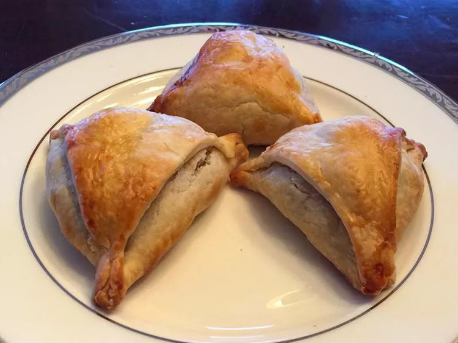

Samosa

Description:
This has all the flavor and heartiness of a great samosa without the frying. Although this is an easier, healthier version of the fried samosa, it tastes very authentic. This recipe has the added advantage that you can make ahead and freeze uncooked samosas, simply skip the egg brushing, freeze until you're ready and cook at 350 degrees F (175 degrees C) for 25 to 30 minutes. Serve warm, plain, or with chutney.
Prep Time:
30 mins
Cook Time:
40 mins
Additional Time:
30 mins
Total Time:
1 hrs 40 mins
Servings:
16
Yield:
16 servings
Ingredients:
- 4 potatoes, peeled and cubed
- ¼ cup oil
- 2 small onions, finely chopped
- 3 tablespoons coriander seed
- 1 tablespoon curry powder
- 1 (1 inch) piece fresh ginger, grated
- 1 teaspoon salt
- 1 teaspoon ground turmeric
- 1 teaspoon ground cumin
- ½ teaspoon ground allspice
- ½ teaspoon cayenne pepper
- ⅛ teaspoon ground cinnamon
- 2 roma (plum) tomatoes, finely chopped
- ½ cup frozen peas
- 4 prepared pie crusts
- 2 egg whites, beaten, or as needed
Steps:
- Preheat the oven to 350 degrees F (175 degrees C).
- Slice the tops off of garlic heads, so the tip of each clove is exposed. Place garlic heads, cut-sides up, on a baking sheet; drizzle tops with olive oil.
- Bake in the preheated oven until garlic is soft, about 30 minutes.
- Set the oven to broil.
- Slice bread loaf in half horizontally; place cut-side up on a baking sheet.
- Squeeze garlic cloves from their skins into a medium bowl. Stir in butter, Parmesan cheese, and parsley until well blended. Spread onto the cut sides of bread.
- Broil bread until toasted, about 5 minutes.